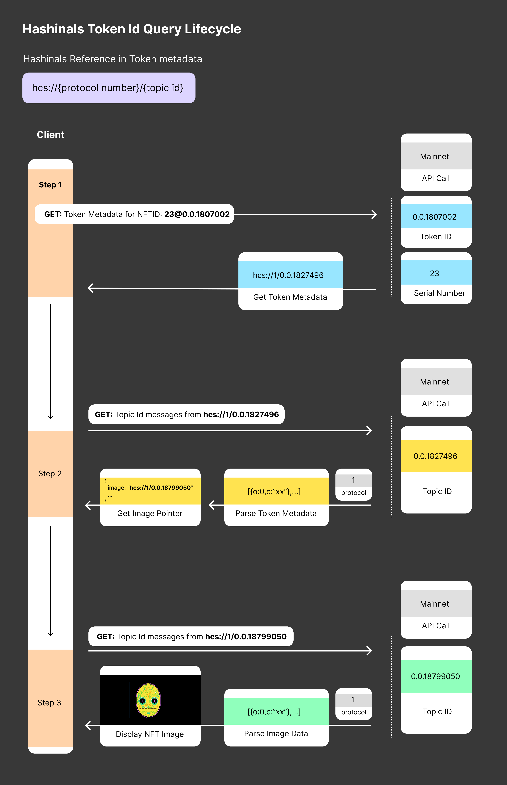

HCS-5 Standard: Tokenized HCS-1 Files, Hashinals
Status: Published
Table of Contents
Authors
- Kantorcodes https://twitter.com/kantorcodes
- Patches https://twitter.com/TMCC_Patches
Abstract
This specification provides a standard way to "inscribe" Hashinals utilizing the Hedera Consensus and Hedera Token Services. Hashinals borrow many ideas from Ordinal theory on Bitcoin, and apply them in a more efficient, and scalable way for the Hedera Hashgraph.
Motivation
Token creators and downstream consumers would like for the whole of NFT metadata to be written directly to the Hashgraph, as opposed to off-chain mediums like IPFS, Arweave, etc. Metadata stored in this manner would reduce coupling to those off-chain stores, and should improve future compatibility with services like the Smart Contract Service, and Hedera Consensus Service. In this manner, the entirety of the NFT is truly "on-chain".
Specification
Hashinals are minted with the Hedera Token Service (HTS) and securely recorded on the Hedera Consensus Service using a HCS-2 guarded registry. Unlike typical NFTs on Hedera, metadata is stored as valid HCS-1 files.
Metadata
Hashinals are discovered through the metadata field on every new Serial Number minted onto tokens via the Hedera Token Service. The metadata field must use a valid HRL (Hedera Resource Locater) to reference the Topic ID in which an HCS-1 file is inscribed onto.
The format of the field is as follows:
hcs://{hcsStandard}/{topicId}
hcsStandard tells you which HCS standard to use when referencing the Topic ID. At this time, this field will always be 1.
topicId is a valid HCS-1 Topic ID in which data for this NFT written to. Please note that while other popular metadata standards will work, a JSON file following the HIP-412 is recommended for your Hashinals to work properly in the Hedera ecosystem.
Bare Minimal example of metadata
{
"name": "My NFT",
"creator": "Creator Name",
"description": "My description",
"image": "hcs://1/0.0.12345",
"type": "image/png",
"attributes": [],
}
Metadata Example
The following is a valid example of the metadata string saved onto the serial number of an NFT on HTS:
hcs://1/0.0.3601682
Inscription Numbers
Like Serial Numbers on individual Token IDs, Inscription Numbers are essentially an HCS Registry that describe the order in which Hashinals are "inscribed". The key facets that are followed for determining these numbers are that:
- "First is first" and determined entirely by the Hashgraph.
- The process is easy to understand and replicate.
Inscription numbers start from 1.
Order is determined by sorting the consensus_timestamp on TokenMintTransactions which correctly follow validation requirements. Invalid mints will not be assigned inscription numbers.
Validation
Hashinals must:
- Use a valid HCS-1 file. Tokens minted with invalid HCS-1 files will be considered invalid and ignored.
- Follow the format for metadata specified in Metadata
- Be minted after 11:07:25.6556 AM Mar 5, 2024, EST (1709654845.655672003). Tokens minted with a valid HRL before this date will not be assigned an inscription number.
Inscription Registry
All valid Hashinals, will be registered in a private Topic ID managed by the HCS Council for the convenience of the ecosystem. The registry serves a dual purpose of recording inscription numbers and providing a database for applications to explore the Hashinals ecosystem.
The process of maintaining a registry can be replicated outside of the Council, but must follow the specification to be valid.
Submitting to the Registry
Messages must be submitted as valid JSON and use the Registry fields as described below.
Registry fields
The sum of all fields should not exceed 1024KB, or the registration will be invalid.
| Field | Description | Example Value |
|---|---|---|
p |
The protocol used by the registry. Should always be hcs-5 unless superseded. |
hcs-5 |
op |
The operation being executed. | register or reset |
t_id |
The topic where the valid HCS-1 file or new registry is located. | 0.0.3541181 |
ht_id |
The Token ID for the registered inscription | 0.0.11111 |
sn |
The serial number of the registered inscription | 1 |
m |
Any optional metadata the indexer might want included | Inscribed by 0.0.1234145 on TurtleMoon |
type |
Any valid mimeType of the inscription. | image/png |
Register Inscriptions
Valid register messages will have the following format on the Hashinals Topic ID. Registration is merely the process of indexing inscription numbers for valid serials on Token IDs.
{
"p": "hcs-5",
"op": "register",
"t_id": "0.0.3541181",
"ht_id": "0.0.11111",
"sn": 1,
"m": "Inscribed by 0.0.1234145 on TurtleMoon"
“type”: “image/png” // or any other valid mime type
}
Reset Registry
In rare events, it could be required to "Reset" the registry. This is a fallback mechanism that should be exercised with extreme caution. On reset, a new Topic ID is provided which will serve as the defacto replacement of the Hashinals Registry.
{
"p": "hcs-5",
"op": "reset",
"t_id": "0.0.999999",
"m": "The world is on fire. We had to move."
}
User Process for inscribing Hashinals

Conclusion
The HCS-5 standard introduces a robust and on-chain method for inscribing NFT metadata directly onto the Hedera Hashgraph, named Hashinals. By integrating the Hedera Consensus Service (HCS) with the Hedera Token Service (HTS), it creates a decentralized and verifiable way to manage NFT metadata, ensuring the longevity and integrity of digital assets in the Hedera ecosystem.
Adopting this standard addresses the drawbacks associated with relying on external storage systems by keeping the entirety of NFT data on-chain. This enhances the trust and value of NFTs by ensuring their metadata is immutable and perpetually accessible.
The detailed specification provided here, from metadata structure to the inscription registry process, gives creators and users clear guidelines and tools for minting and managing Hashinals.